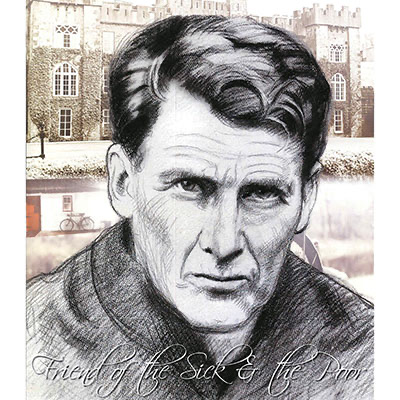

Isusovački blaženici
Svećenik · Odgajatelj
Bl. Ivan Sullivan
1861. – 1933.
Irski obraćenik ostavio je imućan život i postao isusovac. Služio je mladima te duhovno pratio bolesnike i ljude koji su tražili njegovu molitvu.
Tekst je preveden i prilagođen uz pomoć umjetne inteligencije.

Izvor slike
- Spomendan
- 19. veljače
- Zaštitništvo
- Nije navedeno u izvoru
- Životni vijek
- 1861. – 1933.
- Djelovanje
- Mladi i odgoj · Bolesnici i umirući · Obraćenje i novi počeci
- Razdoblje
- 19., 20. stoljeće
- Mjesto rođenja
- Dublin, Irska
- Primanje u Katoličku Crkvu
- 1896.
- Svećeničko ređenje
- 28. srpnja 1907.
- Datum smrti
- 19. veljače 1933.
- Beatifikacija
- 13. svibnja 2017.
U kalendaru zbirke koristi se dan smrti. Taj datum nije zasebna potvrda liturgijskoga spomendana.
Životopis
Ivan Sullivan rođen je 1861. u Dublinu, u obitelji oca anglikanca i majke katolkinje. Odgojen je u očevoj vjeri. Istaknuo se klasičnim studijima, potom završio pravo u Londonu. Nasljedstvo mu je omogućilo otmjen život, putovanja i boravak među pravoslavnim monasima na Svetoj gori. Katoličkoj Crkvi pristupio je 1896. i tu odluku povezivao s majčinim molitvama.
Obraćenje je bilo praćeno promjenom svakodnevice. Uz posao sudskoga službenika pri sucu Williamu O’Brienu posjećivao je bolnice, hospicije i redovničke zajednice te prihvaćao i najjednostavnije poslove. Jednom je u Corku pomagao pripremiti kapelu, a zatim noć proveo na molitvi. Obiteljski i prijateljski krug na njegov je prijelaz reagirao različito, no sačuvao je i iskrenu potporu protestantskih prijatelja. Njegova se svetost nije gradila prekidanjem svake veze s dotadašnjim ljudima.
Isusovački novicijat započeo je 1900., a zaređen je 1907. Većinu redovničkoga života proveo je u Clongowes Woodu. Poučavao je učenike i mladu subraću, propovijedao te pratio ljude u duhovnim i tjelesnim teškoćama. Bolesnici su tražili njegovu molitvu i blagoslov raspelom. Umro je 19. veljače 1933., a blaženim je proglašen 2017. Poštuju ga katolici i anglikanci.
Irski isusovci čuvaju pojedinosti njegova redovničkog puta: prve zavjete položio je u Tullabegu 1902., filozofiju studirao u Stonyhurstu, a teologiju u Milltown Parku. Za zavjetno raspelo odabrao je ono koje je pripadalo njegovoj majci i nosio ga cijeloga života. Učenici su pamtili blagost i spremnost da im pomogne, čak i kada su pogriješili. Volio je prirodu i vodio ih u duge šetnje. Molitva, pokora i blizina bolesnicima ostale su trajne oznake njegova služenja.
Tekst je preveden i prilagođen uz pomoć umjetne inteligencije.
Pročitaj više na izvornoj stranici ↗